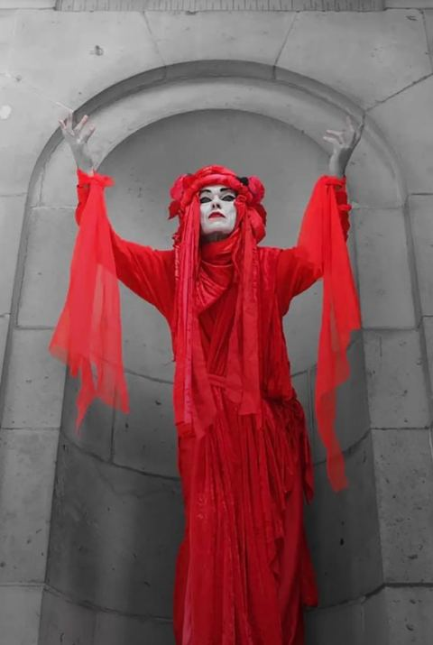
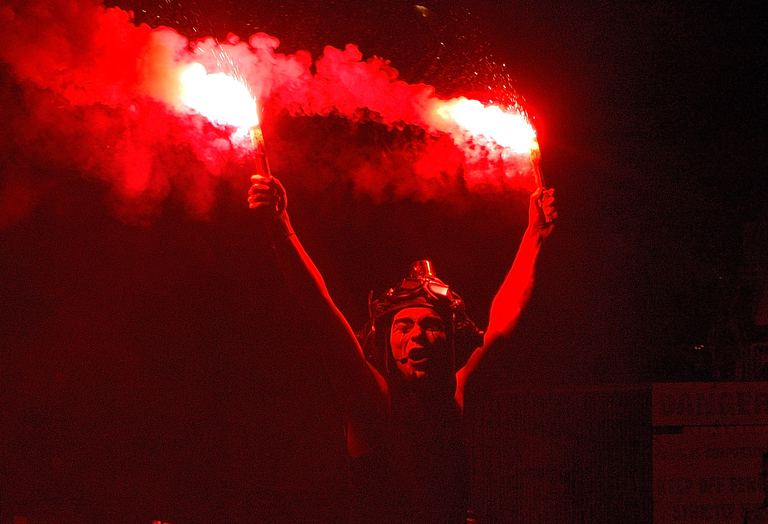
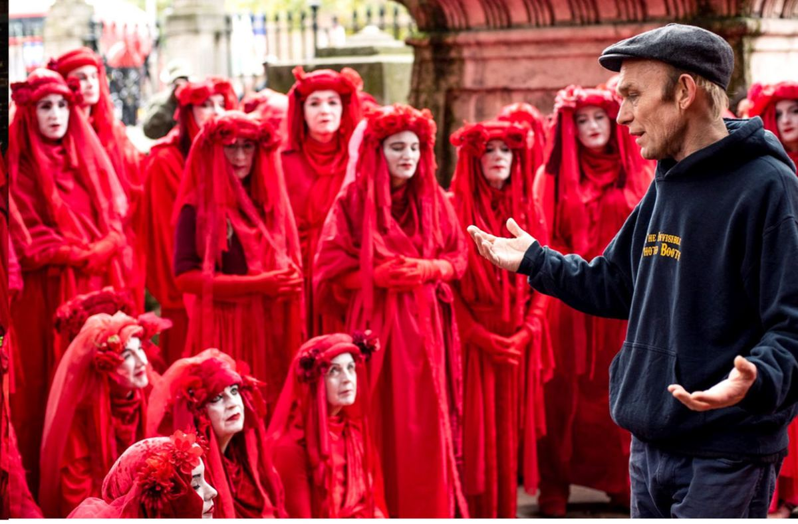

Founder · Character & visual identity · Est. 2019
Red Rebel Brigade
A silent red procession that became one of the most recognisable protest images in the world.
Doug created the Red Rebel Brigade in 2019 — a character and visual identity built around a slow, silent procession in red. The image spread worldwide within months of its first appearance at climate protests.
Groups performing the Red Rebel Brigade now exist across dozens of countries. The visual language — total red, slow movement, absolute silence — is one of the most replicated pieces of protest design in recent history.
The project demonstrates Doug's ability to design not just a costume or character, but an entire behavioural and visual grammar that can be adopted and adapted by communities who were never part of the original creation.



Behind the procession
The Red Rebel Brigade requires no props beyond the costume, no script, no amplification. Its power comes entirely from the choreography of bodies, the weight of silence, and the accumulation of red in space.
Doug continues to train new groups and consult on productions internationally.